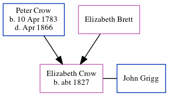

Elizabeth Hewett Grigg (née Crow) c1827 -
[ Home ] | [ Calendar ] | [ Surnames Index ] | [ Errors ] | [ Family History ]The child of Peter Crow and Elizabeth Brett, Elizabeth Crow, the first cousin five-times-removed on the mother's side of Nigel Horne, was born c. 1827 and baptised in Minster, Thanet, Kent, England on 10 Jun 1827. She married John Grigg there at St Mary The Virgin on 15 Oct 18471.
Parents
- Peter was born on 10 Apr 1783
Citations
- Kent, Canterbury Archdeaconry marriages 1538-1928 - Findmypast
Media
Canterbury Baptisms Transcription - GBPRS-CANT-B-96509833
England & Wales marriages 1837-2008 Transcription - BMD-M-1847-4-AM-000463-029
Kent, Canterbury Archdeaconry marriages 1538-1928 - GBPRS/CANT/M/97045608/2
Kent, Canterbury Archdeaconry banns 1754-1928 - GBPRS/CANT/M/94062413/2
Family Tree
Map
Generated by ged2site. Last updated on Jul 3, 2024
Known Issues
Birth date (abt 1827) has no citations
Date of birth is known, but not place